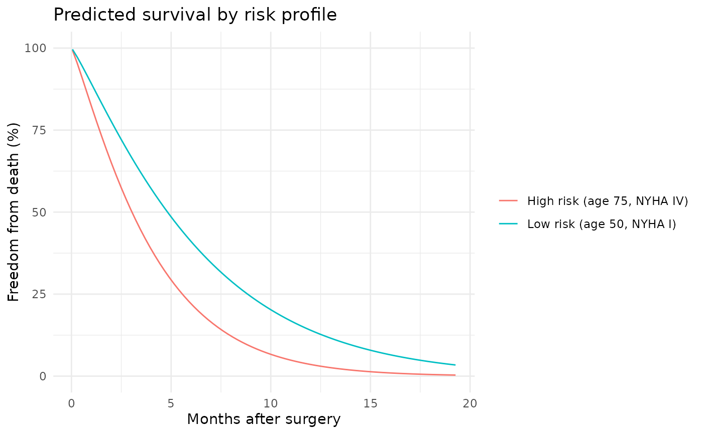

Produces prediction outputs from a hazard object. Supports multiple prediction
types including linear predictor, hazard, survival probability, and cumulative hazard.
Arguments
- object
A
hazardobject.- newdata
Optional matrix or data frame of predictors. For types requiring time (e.g., "survival", "cumulative_hazard"), newdata should include a
timecolumn, or time will be taken from the fitted object's data.- type
Prediction type:
"linear_predictor": Linear predictor η = x·β (not available for multiphase)"hazard": Hazard scale exp(η) (not available for multiphase)"survival": Survival probability S(t|x) = exp(-H(t|x))"cumulative_hazard": Cumulative hazard H(t|x) at event times
- decompose
Logical; if
TRUEand the model is multiphase, return a data frame with per-phase cumulative hazard contributions alongside the total. Ignored for single-distribution models. DefaultFALSE.- ...
Unused; included for S3 compatibility.
Details
For Weibull models with survival or cumulative_hazard predictions:
Cumulative hazard: H(t|x) = (μ·t)^ν · exp(η)
Survival: S(t|x) = exp(-H(t|x))
Time values must be positive and finite. If newdata contains a time column,
it will be used; otherwise, the time vector from the fitted object is used.
For models fit with time_windows, predictions for type = "linear_predictor"
or "hazard" also require time values (via newdata$time or fitted-time fallback)
so window-specific coefficients can be selected.
See also
hazard() for model fitting,
summary.hazard() for model summaries,
hzr_phase() for multiphase temporal shapes.
vignette("prediction-visualization") for detailed prediction
workflows including decomposed hazard plots and patient-specific curves.
Examples
# ── Basic predictions ────────────────────────────────────────────────
set.seed(1)
fit <- hazard(time = rexp(50, 0.3), status = rep(1L, 50),
theta = c(0.3, 1.0), dist = "weibull", fit = TRUE)
predict(fit, type = "survival")
#> [1] 0.508448836 0.315117497 0.909632142 0.913801355 0.704022509 0.034429522
#> [7] 0.297904379 0.635876619 0.407732732 0.908685617 0.245861859 0.504733067
#> [13] 0.295096862 0.003729697 0.364948062 0.373066533 0.134498594 0.565324696
#> [19] 0.772692686 0.605268524 0.070992893 0.572924045 0.803140735 0.619329758
#> [25] 0.937239852 0.968075472 0.611315229 0.007471798 0.318195648 0.389681823
#> [31] 0.232969073 0.981596565 0.781843506 0.267479469 0.868327070 0.378412625
#> [37] 0.797695039 0.524953194 0.510431884 0.845615583 0.354514703 0.376046945
#> [43] 0.276615587 0.289749395 0.626388405 0.798022001 0.276332062 0.390676459
#> [49] 0.652266897 0.113525051
predict(fit, newdata = data.frame(time = c(1, 2, 5)),
type = "cumulative_hazard")
#> [1] 0.2244716 0.5138491 1.5356737
# ── Patient-specific survival curves ─────────────────────────────────
set.seed(1001)
n <- 180
dat <- data.frame(
time = rexp(n, rate = 0.35) + 0.05,
status = rbinom(n, size = 1, prob = 0.6),
age = rnorm(n, mean = 62, sd = 11),
nyha = sample(1:4, n, replace = TRUE),
shock = rbinom(n, size = 1, prob = 0.18)
)
fit2 <- hazard(
survival::Surv(time, status) ~ age + nyha + shock,
data = dat,
theta = c(mu = 0.25, nu = 1.10, beta1 = 0, beta2 = 0, beta3 = 0),
dist = "weibull", fit = TRUE
)
new_patients <- data.frame(
time = c(0.5, 1.5, 3.0),
age = c(50, 65, 75),
nyha = c(1, 3, 4),
shock = c(0, 0, 1)
)
# Compute predictions from the clean covariate frame before adding columns
surv <- predict(fit2, newdata = new_patients, type = "survival")
cumhaz <- predict(fit2, newdata = new_patients, type = "cumulative_hazard")
new_patients$survival <- surv
new_patients$cumulative_hazard <- cumhaz
new_patients
#> time age nyha shock survival cumulative_hazard
#> 1 0.5 50 1 0 0.9494097 0.05191482
#> 2 1.5 65 3 0 0.7743185 0.25577202
#> 3 3.0 75 4 1 0.5046535 0.68388317
# \donttest{
# ── Grouped survival curves ───────────────────────────────────────
if (requireNamespace("ggplot2", quietly = TRUE)) {
library(ggplot2)
t_grid <- seq(0.05, max(dat$time), length.out = 80)
profiles <- data.frame(
label = c("Low risk (age 50, NYHA I)",
"High risk (age 75, NYHA IV)"),
age = c(50, 75),
nyha = c(1, 4),
shock = c(0, 1)
)
curve_list <- lapply(seq_len(nrow(profiles)), function(i) {
nd <- data.frame(
time = t_grid,
age = profiles$age[i],
nyha = profiles$nyha[i],
shock = profiles$shock[i]
)
nd$survival <- predict(fit2, newdata = nd, type = "survival") * 100
nd$profile <- profiles$label[i]
nd
})
curve_df <- do.call(rbind, curve_list)
ggplot(curve_df, aes(time, survival, colour = profile)) +
geom_line() +
scale_y_continuous(limits = c(0, 100)) +
labs(x = "Months after surgery",
y = "Freedom from death (%)",
title = "Predicted survival by risk profile",
colour = NULL) +
theme_minimal()
}

# }
# \donttest{
# ── Multiphase predictions with decomposition ────────────────────
set.seed(42)
n <- 200
dat <- data.frame(
time = rexp(n, rate = 0.25) + 0.01,
status = rbinom(n, size = 1, prob = 0.65)
)
fit_mp <- hazard(
survival::Surv(time, status) ~ 1,
data = dat,
dist = "multiphase",
phases = list(
early = hzr_phase("cdf", t_half = 0.5, nu = 2, m = 0),
late = hzr_phase("cdf", t_half = 5, nu = 1, m = 0)
),
fit = TRUE,
control = list(n_starts = 3, maxit = 500)
)
t_grid <- seq(0.01, max(dat$time) * 0.9, length.out = 100)
nd <- data.frame(time = t_grid)
# Overall survival
predict(fit_mp, newdata = nd, type = "survival")
#> early.log_mu early.log_mu early.log_mu early.log_mu early.log_mu early.log_mu
#> 0.99990484 0.97022535 0.92520423 0.88180010 0.84116885 0.80294794
#> early.log_mu early.log_mu early.log_mu early.log_mu early.log_mu early.log_mu
#> 0.76673953 0.73225552 0.69930039 0.66774162 0.63748729 0.60847103
#> early.log_mu early.log_mu early.log_mu early.log_mu early.log_mu early.log_mu
#> 0.58064233 0.55396028 0.52838959 0.50389809 0.48045514 0.45803065
#> early.log_mu early.log_mu early.log_mu early.log_mu early.log_mu early.log_mu
#> 0.43659461 0.41611675 0.39656645 0.37791279 0.36012455 0.34317040
#> early.log_mu early.log_mu early.log_mu early.log_mu early.log_mu early.log_mu
#> 0.32701896 0.31163897 0.29699944 0.28306971 0.26981962 0.25721959
#> early.log_mu early.log_mu early.log_mu early.log_mu early.log_mu early.log_mu
#> 0.24524071 0.23385480 0.22303445 0.21275314 0.20298519 0.19370582
#> early.log_mu early.log_mu early.log_mu early.log_mu early.log_mu early.log_mu
#> 0.18489120 0.17651838 0.16856536 0.16101107 0.15383532 0.14701884
#> early.log_mu early.log_mu early.log_mu early.log_mu early.log_mu early.log_mu
#> 0.14054323 0.13439093 0.12854523 0.12299022 0.11771076 0.11269248
#> early.log_mu early.log_mu early.log_mu early.log_mu early.log_mu early.log_mu
#> 0.10792171 0.10338550 0.09907155 0.09496820 0.09106439 0.08734965
#> early.log_mu early.log_mu early.log_mu early.log_mu early.log_mu early.log_mu
#> 0.08381408 0.08044827 0.07724335 0.07419089 0.07128295 0.06851199
#> early.log_mu early.log_mu early.log_mu early.log_mu early.log_mu early.log_mu
#> 0.06587089 0.06335292 0.06095171 0.05866124 0.05647580 0.05439002
#> early.log_mu early.log_mu early.log_mu early.log_mu early.log_mu early.log_mu
#> 0.05239880 0.05049732 0.04868104 0.04694564 0.04528705 0.04370142
#> early.log_mu early.log_mu early.log_mu early.log_mu early.log_mu early.log_mu
#> 0.04218510 0.04073465 0.03934681 0.03801848 0.03674676 0.03552886
#> early.log_mu early.log_mu early.log_mu early.log_mu early.log_mu early.log_mu
#> 0.03436219 0.03324425 0.03217270 0.03114532 0.03016001 0.02921476
#> early.log_mu early.log_mu early.log_mu early.log_mu early.log_mu early.log_mu
#> 0.02830769 0.02743701 0.02660102 0.02579811 0.02502674 0.02428548
#> early.log_mu early.log_mu early.log_mu early.log_mu early.log_mu early.log_mu
#> 0.02357294 0.02288782 0.02222888 0.02159495 0.02098490 0.02039768
#> early.log_mu early.log_mu early.log_mu early.log_mu
#> 0.01983228 0.01928774 0.01876315 0.01825764
# Per-phase decomposed cumulative hazard
decomp <- predict(fit_mp, newdata = nd,
type = "cumulative_hazard", decompose = TRUE)
head(decomp)
#> time total early late
#> 1 0.0100000 9.516681e-05 9.399558e-07 9.422685e-05
#> 2 0.3177112 3.022691e-02 1.830355e-02 1.192336e-02
#> 3 0.6254224 7.774078e-02 4.704336e-02 3.069742e-02
#> 4 0.9331336 1.257899e-01 7.220608e-02 5.358381e-02
#> 5 1.2408448 1.729629e-01 9.338754e-02 7.957533e-02
#> 6 1.5485560 2.194654e-01 1.113778e-01 1.080876e-01
# }